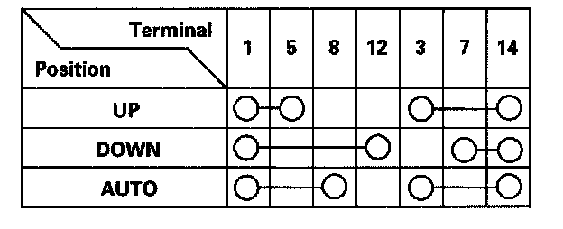

Front Passenger's Power Window Switch Test
Front Passenger's Power Window Switch Test1. Remove the front passenger's door panel, and disconnect the 14P connector from the front passenger's power window switch.

2. Check for continuity between the terminals in each switch position according to the table.
3. If the continuity is not as specified, replace the switch.